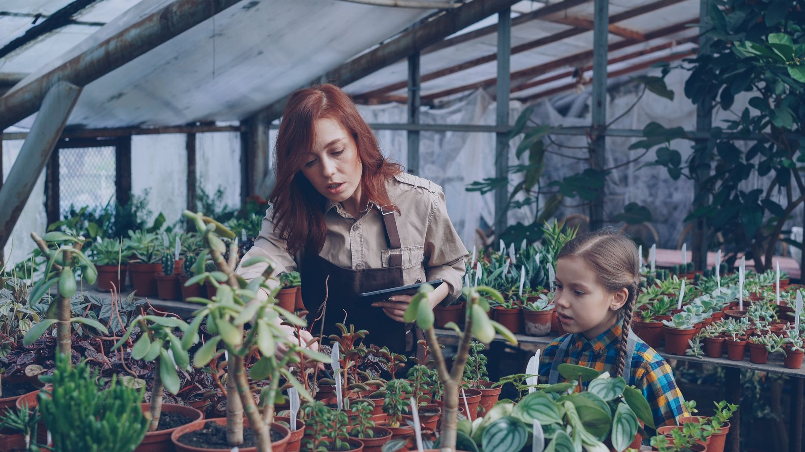

¿Qué es Soy Climatika?
Soy Climatika es un hub digital de vinculación socioambiental: un espacio donde las mejores soluciones se encuentran para crear algo más grande. Trabajamos todos los días para construir un futuro que funcione mejor para las personas y para su entorno. Entre las tecnologías que forman parte de este ecosistema está Aquavita, nuestra solución de ahorro de agua (conoce más en la sección Aquavita).

- Michelin
- Grand Fiesta Americana Querétaro
- Hospital Ángeles Centro Sur
- Fiesta Inn Querétaro
- UNAM Juriquilla
Entre otros.
Soy Climatika nació de una convicción de su fundadora, Fernanda Bermúdez:
“Fundé Soy Climatika con una idea clara: que la acción climática deje de ser discurso y se convierta en realidad.”
“Hoy vinculo talento, empresas y proyectos que quieren generar impacto positivo de verdad.”
“Creo puentes. Acelero decisiones. Construyo futuro.”